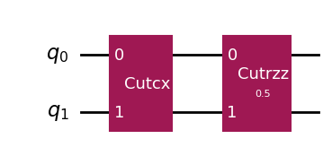
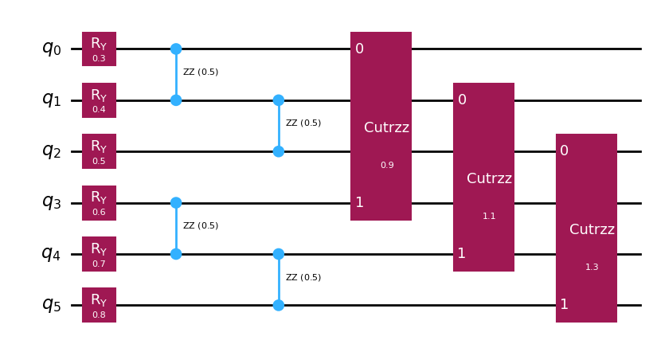
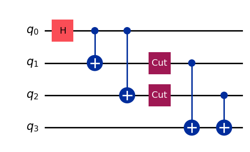
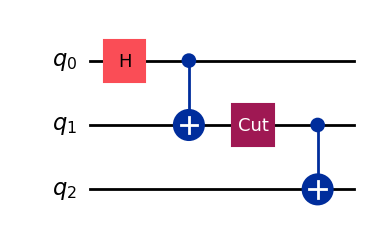
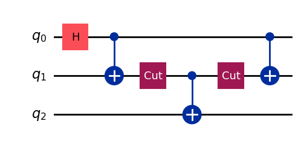
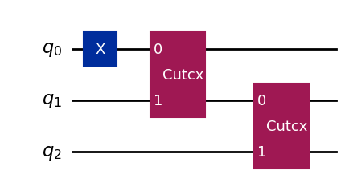

Intro to QCut CutOptions#
from qiskit import QuantumCircuit
from qiskit.circuit.library import CXGate, RZZGate
from qiskit.quantum_info import SparsePauliOp
from qiskit_aer import AerSimulator
import QCut as ck
from QCut import CutOptions, cut, cutGate
QCut allows configuring some options related to the circuit cutting, finding, and execution processes.
All of these options are configured with a single CutOptions object that is passed to .run() or .get_locations_and_subcircuits(). CutOptions allows defining the following options:
consolidate: whether to merge consecutive cut gates into a single cut gate saving on experiment circuits and overheadauto(default),alwaysornever.autocompares cost withjoint_rotation_cutsapplied before consolidation since this sometimes results in cheaper decompositions.
joint_rotation_cuts: whether to jointly cut parallel 2 qubit rotation gates using a joint decomposition. The joint decomposition costs strictly less, both in circuits and overhead, than decomposing separatelyTrue(default) orFalse
wire_cut_communication: whether to use a wire cutting decomposition utilising one-way classical communication (LOCC) between subcircuits. Leads to a decomposition with fewer circuits. Also achieves smaller overheads on parallel blocks of more than 2 wire cuts.auto(default),alwaysornever.autoapplies LOCC wire cuts on blocks of at least 2 parallel wire cuts and otherwise defaults to non-communicating decomposition.
expansion: whether to exactly enumerate through all of the generated experiment circuits from the decomposition or to sample it.auto(default),exactorsample.autochooses betweenexactandsamplebased onmax_exact_groups
max_exact_groups: the maximum number of experiment groups to exactly enumerate throughintdefault 1000
num_samples: number of samples to take from the decomposition whenexpansionis set tosampledefaults to
max_exact_groups
finder_candidates: how many candidate partitions to compare in automatic cut findingintdefault 5
seed: seed passed to the automatic cut finder and used for sampling whenexpansionis set tosample
Below you can also see the default values. They can also be accessed via ck.DEFAULT_OPTIONS
options = CutOptions(
consolidate="auto",
joint_rotation_cuts=True,
wire_cut_communication="auto",
expansion="auto",
max_exact_groups=1000,
num_samples=None,
finder_candidates=5,
seed=None,
)
Now lets see some of them in action
qc = QuantumCircuit(2)
qc.append(**cutGate(CXGate(), 0, 1))
qc.append(**cutGate(RZZGate(0.5), 0, 1))
qc.draw("mpl")

for mode in ["auto", "never", "always"]:
options = CutOptions(
consolidate=mode,
)
cut_circuit = ck.get_locations_and_subcircuits(qc, options=options)
observables = SparsePauliOp(["ZZ"])
cut_experiment = ck.get_experiment_circuits(cut_circuit, observables)
print(f"Generated {cut_experiment.num_circuits} circuits. In mode {mode}.")
Generated 12 circuits. In mode auto.
Generated 72 circuits. In mode never.
Generated 12 circuits. In mode always.
def parallel_rotations(n_gates, cut_it=True):
"""n_gates parallel rzz across a two-way split, both sides connected."""
width = 2 * n_gates
circuit = QuantumCircuit(width)
for qubit in range(width):
circuit.ry(0.3 + 0.1 * qubit, qubit)
for index in range(n_gates - 1):
circuit.rzz(0.5, index, index + 1)
circuit.rzz(0.5, n_gates + index, n_gates + index + 1)
for index in range(n_gates):
theta = 0.9 + 0.2 * index
if cut_it:
circuit.append(**cutGate(RZZGate(theta), index, n_gates + index))
else:
circuit.rzz(theta, index, n_gates + index)
return circuit
parallel_circuit = parallel_rotations(3, cut_it=True)
parallel_circuit.draw("mpl")

for mode in [True, False]:
options = CutOptions(
joint_rotation_cuts=mode,
)
cut_circuit = ck.get_locations_and_subcircuits(parallel_circuit, options=options)
observables = SparsePauliOp(["ZZZZZZ"])
cut_experiment = ck.get_experiment_circuits(cut_circuit, observables)
print(f"Generated {cut_experiment.num_circuits} circuits. In mode {mode}.")
Generated 264 circuits. In mode True.
Generated 432 circuits. In mode False.
wire_cut = QuantumCircuit(4)
wire_cut.h(0)
wire_cut.cx(0, 1)
wire_cut.cx(0, 2)
wire_cut.append(cut(), [1])
wire_cut.append(cut(), [2])
wire_cut.cx(1, 3)
wire_cut.cx(2, 3)
wire_cut.draw("mpl")

for mode in ["auto", "never", "always"]:
options = CutOptions(
wire_cut_communication=mode,
)
cut_circuit = ck.get_locations_and_subcircuits(wire_cut, options=options)
observables = SparsePauliOp(["ZZZZ"])
cut_experiment = ck.get_experiment_circuits(cut_circuit, observables)
print(f"Generated {cut_experiment.num_circuits} circuits. In mode {mode}.")
Generated 56 circuits. In mode auto.
Generated 128 circuits. In mode never.
Generated 56 circuits. In mode always.
wire_cut_single = QuantumCircuit(3)
wire_cut_single.h(0)
wire_cut_single.cx(0, 1)
wire_cut_single.append(cut(), [1])
wire_cut_single.cx(1, 2)
wire_cut_single.draw("mpl")

for mode in ["auto", "never", "always"]:
options = CutOptions(
wire_cut_communication=mode,
)
cut_circuit = ck.get_locations_and_subcircuits(wire_cut_single, options=options)
observables = SparsePauliOp(["ZZZ"])
cut_experiment = ck.get_experiment_circuits(cut_circuit, observables)
print(f"Generated {cut_experiment.num_circuits} circuits. In mode {mode}.")
Generated 16 circuits. In mode auto.
Generated 16 circuits. In mode never.
Generated 12 circuits. In mode always.
wire_cut_sequence = QuantumCircuit(3)
wire_cut_sequence.h(0)
wire_cut_sequence.cx(0, 1)
wire_cut_sequence.append(cut(), [1])
wire_cut_sequence.cx(1, 2)
wire_cut_sequence.append(cut(), [1])
wire_cut_sequence.cx(0, 1)
wire_cut_sequence.draw("mpl")

for mode in ["auto", "never", "always"]:
options = CutOptions(
wire_cut_communication=mode,
)
cut_circuit = ck.get_locations_and_subcircuits(wire_cut_sequence, options=options)
observables = SparsePauliOp(["ZZZ"])
cut_experiment = ck.get_experiment_circuits(cut_circuit, observables)
print(f"Generated {cut_experiment.num_circuits} circuits. In mode {mode}.")
Generated 128 circuits. In mode auto.
Generated 128 circuits. In mode never.
Generated 96 circuits. In mode always.
Notice that here the non-parallel wire cuts actually lead to more circuits in auto mode. This is due to how the implementation affects the actual achieved overhead. The ideal overhead of the LOCC cuts is always better than the non-communicating decomposition. However due to how it needs to be implemented to be efficient on actual hardware (no jobs with single circuit and single shot) the achieved overhead suffers somewhat and is slightly worse than the non-communicative one on non-parallel wire cuts. This is why auto sometimes chooses to generate more circuits. In the end this is a situation dependent tradeoff where you are choosing between more samples/shots or more circuits.
ghz = QuantumCircuit(3)
ghz.x(0)
ghz.append(**cutGate(CXGate(), 0, 1))
ghz.append(**cutGate(CXGate(), 1, 2))
ghz.draw("mpl")

parallel_circuit = parallel_rotations(3, cut_it=True)
for samples in [100, 3000, "exact"]:
if samples == "exact":
options = CutOptions(
expansion="exact",
)
else:
options = CutOptions(
num_samples=samples,
expansion="sample",
)
cut_circuit = ck.get_locations_and_subcircuits(parallel_circuit, options=options)
observables = SparsePauliOp(["ZZZZZZ"])
cut_experiment = ck.get_experiment_circuits(cut_circuit, observables)
print(f"Generated {cut_experiment.num_circuits} circuits.")
res = ck.run_experiments(cut_experiment, backend=AerSimulator())
expectation_values = ck.estimate_expectation_values(res)
if samples == "exact":
print(f"ZZ = {expectation_values[0]} for exact expansion.")
else:
print(f"ZZ = {expectation_values[0]} for {samples} samples.")
Generated 120 circuits.
ZZ = 0.21840353784399721 for 100 samples.
Generated 264 circuits.
ZZ = 0.3867275818121978 for 3000 samples.
Generated 264 circuits.
ZZ = 0.3145307898274838 for exact expansion.